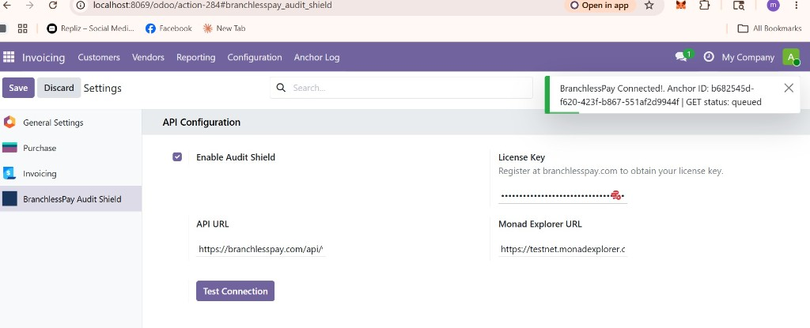
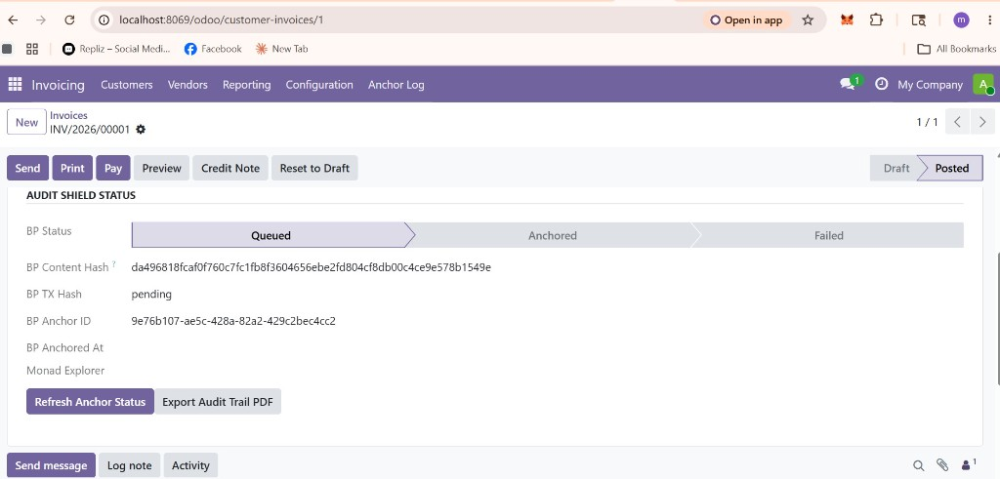
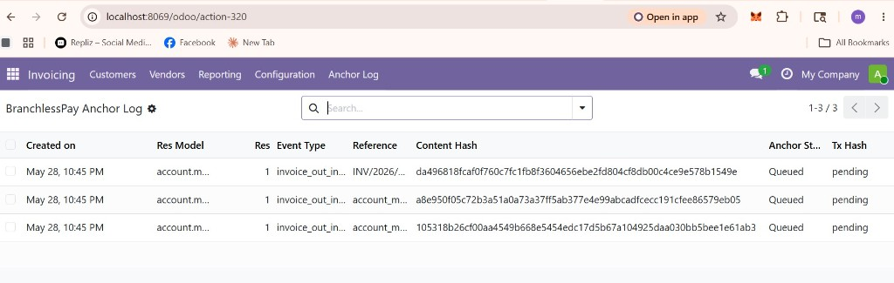

External service required. This module requires external BranchlessPay API service. See branchlesspay.com for details. A valid license key is required for anchoring.
BP Audit Shield adds a tamper-evident audit layer on top of your existing Odoo workflows. Every invoice, payment, purchase order, and approval request can be hashed (SHA-256) and anchored to the BranchlessPay network (Monad blockchain) without changing how Odoo works.
POST /api/v1/anchor and status pollingGo to Accounting → Configuration → Settings → BranchlessPay Audit Shield. Enable the module, enter your license key from branchlesspay.com, and click Test Connection.



Listed on the Odoo App Store at $29 USD (paid module). Free trial tiers may be available directly from BranchlessPay. License keys are issued per tenant at branchlesspay.com.
Publisher revenue (Odoo App Store): BranchlessPay receives 70% of net App Store revenue; Odoo S.A. retains 30%. Minimum publisher payout threshold: €400.
Data processed for anchoring is sent to BranchlessPay API endpoints only when a valid license key is configured. No credentials are stored in source code.
Privacy Policy: branchlesspay.com/compliance
Technology documentation: branchlesspay.com/technology
Support: suhono@branchlesspay.com